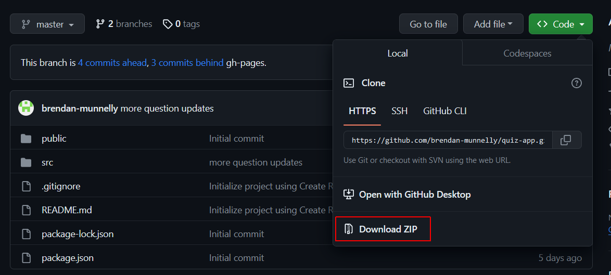
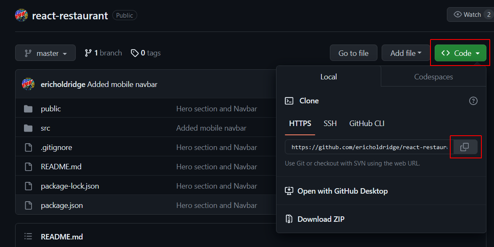
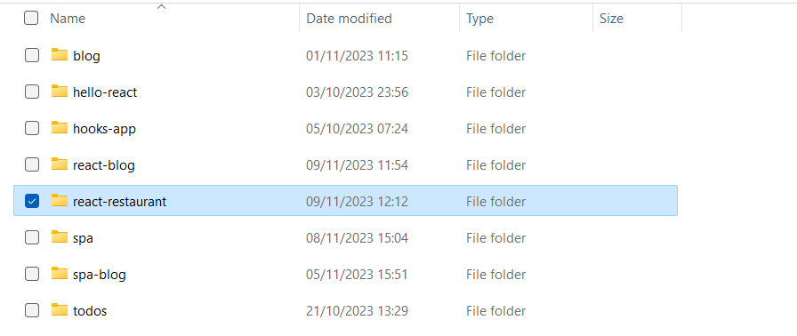
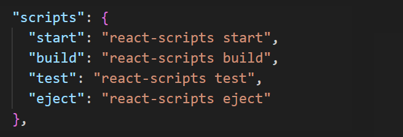

Learning Goals
At the end of this Tutorial, you will be able to:
- Download and install apps from GitHub with the ZIP and Git HTTP options.
- Install apps from the npm package registry with the npx and npm options.
Downloading and installing apps from GitHub
Developers commonly make their JavaScript and ReactJS apps publicly available on GitHub. Note that:
- Not all of these apps contain working code.
- Some apps may contain malicious code.
To download an app from GitHub, you have two main options:
- Download the app as a ZIP file and then uncompress it.
- Clone the app with Clone HTTP.
You can then run options to build and install the downloaded app locally, install any dependencies, (attempt) to fix any out-of-date or broken code, and finally run the app.
Downloading an app as a ZIP file
Here are the steps:
- In your web browser, go to the GitHub repo of the React app you want to download.
- Near the top-left of the repo screen, you will see a dropdown list showing which Git branch you are currently viewing.
If this branch is not the master or main branch, you need to change it. For example, it might be the gh-pages branch. See the steps below.
 After selecting the master or main branch, you will see that the list of files displayed includes the package.json and package-lock.json files. These two files are needed for you to be able to install the app locally on your machine.
After selecting the master or main branch, you will see that the list of files displayed includes the package.json and package-lock.json files. These two files are needed for you to be able to install the app locally on your machine. - Next, near the top-right of the screen, click the green Code button and then select the Download ZIP option. 
- Extract the downloaded ZIP file to a local folder on your computer.
- Open a Command Prompt or VS Code Terminal and navigate to the folder where you have downloaded and unzipped the app. For example:
C:\react\apps\todos-app>
- In this app folder, install any dependencies needed by the app:
npm install - Optionally, run the command below to resolve out-of-date code or other issues with your downloaded app.
npm audit fix --force
- When this process completes, run the command below to launch the downloaded app on your ReactJS development server. It will default to port 3000:
npm start
View the app in your web browser to verify it has downloaded correctly.
Downloading an app with Clone HTTP
Here are the steps:
- In your web browser, go to the GitHub repo of the React app.
- Near the top-left of the repo screen, you will see a dropdown list showing which Git branch you are currently viewing. Ensure this is set to the master or main branch (and not the gh-pages or other branch). You should see that the list of files displayed includes the package.json and package-lock.json files.
- Near the top-right of the screen, click the green Code button.
- From the dropdown menu, in the Clone HTTPS section, click the Copy icon at the right. 
- Open a Command Prompt or VS Code Terminal and navigate to the local folder where you want to place the app. For example:
C:\myapps\todos-app>
- In this folder, enter the git clone command, followed by the repo URL:
git clone <URL to the GitHub repo> - When this process completes, display the folder created by the cloned app. 
- If your cloned app folder contains a node_modules sub-folder, delete it.

- Your cloned app folder should contain a file named package-lock.json or yarn.lock. Delete this file.
- In your cloned app folder, open the package.json file in VS Code and verify it contains a scripts section like that shown below. If this section is missing, add it to the file. 
- In the cloned app folder, install any dependencies needed by the app:
npm install - Optionally, run the command below to resolve out-of-date code or other issues with your downloaded app:
npm audit fix --force
- When this process completes, run the cloned app on your development server. It will default to port 3000:
npm start
View the app in your browser to verify it has been cloned correctly.
The npm package registry
The npm registry is a public database of open-source JavaScript packages, each comprised of software and metadata. Currently, the registry has more than two million packages, making it the largest software registry in the world.
You have two options for using packages from the registry: npm install and npm build. These are explained below.
Using the npm option
With this option, you can download and install packages and dependencies, either globally (available system-wide) or locally (available only within the current project) to your project.
You can run scripts defined in the package.json file and manage the project's dependencies.
Using the npx option
You can use this option to execute packages – without installing them.
It's useful for one-off commands where you don't want to install the package globally or add it to your project.